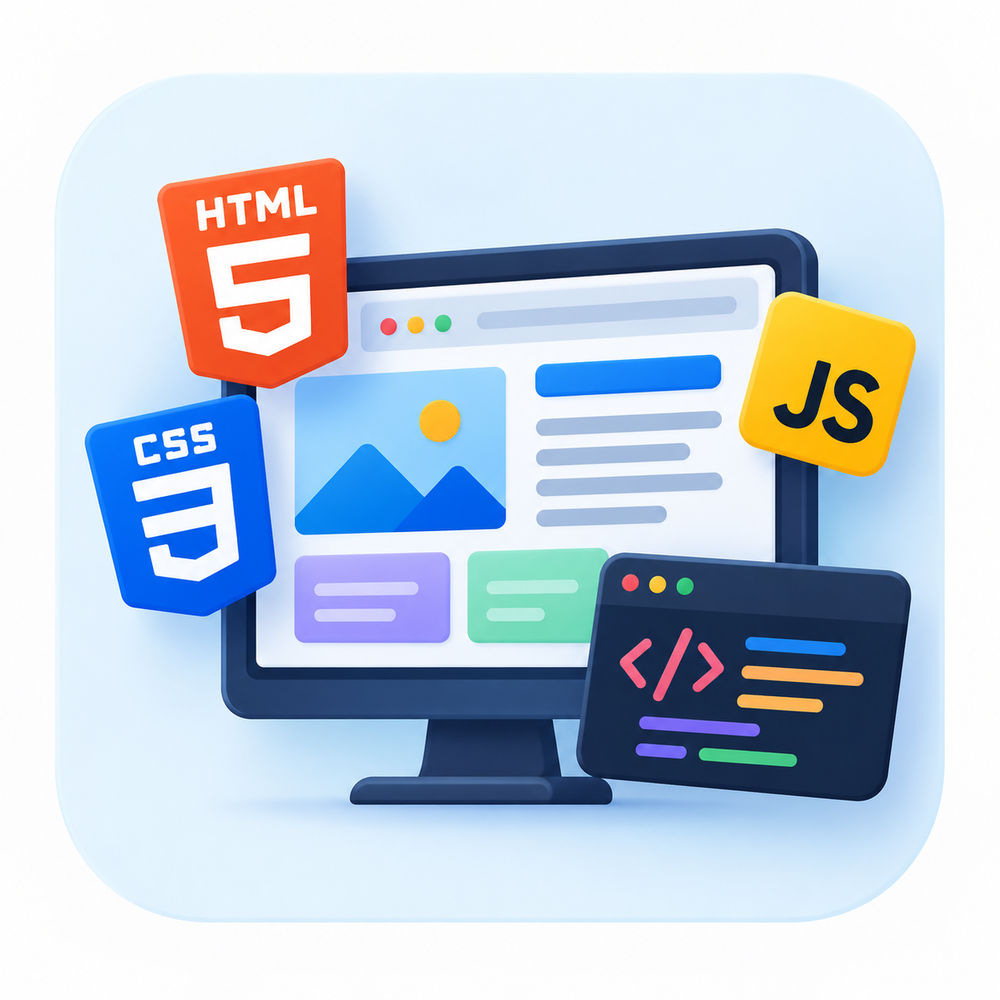
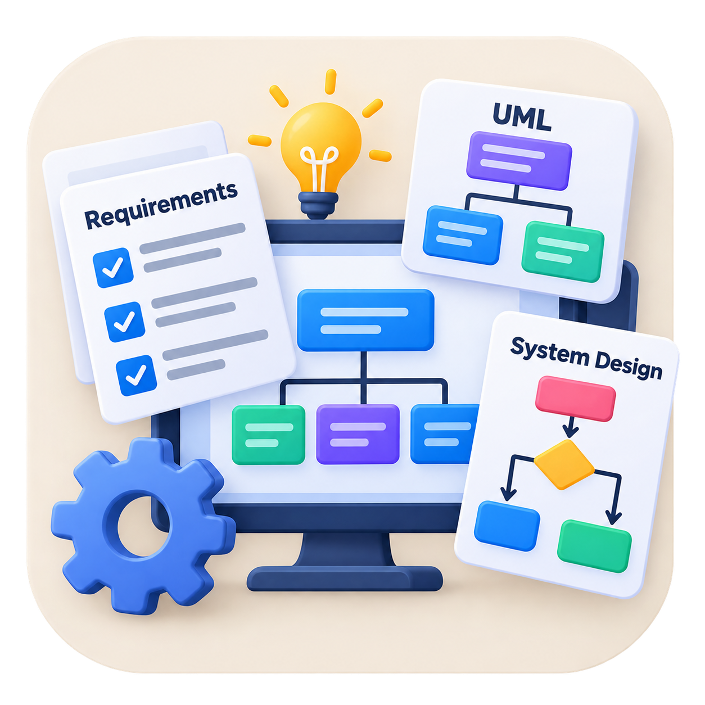

My Services
Areas where I can contribute and keep growing.
Programming
I have foundational knowledge of Python, C#, and Java and can apply programming concepts to academic and software development projects. I am interested in continuing to develop my programming skills and building practical software solutions.

Web Development
I have experience working with HTML, CSS, and JavaScript and have created a multi-page website using HTML and CSS. I can develop structured webpages with organized content and internal navigation.
AI & Machine Learning
I have foundational knowledge of artificial intelligence concepts, machine learning, and AI systems design through my academic studies. I am interested in applying AI concepts to practical software and technology projects.
Database Development
I have knowledge of SQL, Oracle, and database concepts as part of my software engineering studies. I understand the importance of organizing and managing data within software systems.

Software Requirements & System Design
I have experience working with software requirements, system design, use-case diagrams, workflow diagrams, and project documentation. I have applied these concepts in academic group projects to describe and organize system functionality.